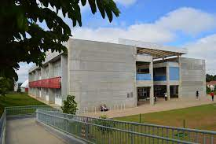

Por quais motivos o Projeto surgiu?
A inclusão social é um direito de todos, porém muitos ficam à margem da sociedade, devido à falta de acesso à condições dignas de trabalho, de educação, de cultura, saúde, entre outros. Com o advento da tecnologia, surgiu um novo tipo de exclusão, denominada "exclusão digital". Essa afeta as camadas da sociedade que não têm acesso às tecnologias da informação ou o seu acesso é limitado.
Inclusão digital não deve ser confundida com o simples fato de possibilitar um contato superficial com computadores, tablets, smartphones ou Internet. O termo inclusão digital vai além. Trata-se da democratização do acesso às tecnologias da informação, utilizando-as como ferramenta para oportunizar a melhoria na condição de vida do indivíduo, de sua região ou comunidade, permitindo a sua inserção na “sociedade digital”. Portanto, pretende-se, com a inclusão digital, que o indivíduo saiba efetivamente utilizar as tecnologias da informação e que estas possibilitem um crescimento pessoal, intelectual e/ou profissional.
Neste contexto, o Projeto de Inclusão Digital e Cidadania, tem por objetivo promover ações de inclusão digital trazendo os benefícios da tecnologia para quem dela precisa.
Objetivos do Projeto:
O Projeto de Inclusão Digital e Cidadania tem por objetivo geral promover ações de inclusão digital trazendo os benefícios da tecnologia da informação para quem dela precisa. Desta forma, este projeto será desenvolvido em forma de extensão ofertando cursos de inclusão digital para crianças e adolescentes na faixa etária de 04 a 14 anos, na Instituição Cidade da Criança no bairro Alto da Lagoa, município de Irati.
Este projeto tem como objetivos específicos:
- Capacitar alunos dos Cursos de Informática do IFPR Campus Irati a mediarem conhecimentos de Tecnologia da Informação à comunidade;
- Desenvolver habilidades técnico-didáticas dos alunos dos cursos de Informática do IFPR Campus Irati;
- Propiciar aos alunos do IFPR o conhecimento de novas realidades sociais;
- Possibilitar a iniciação à computação e ao pensamento computacional, através do ensino lúdico, utilizando softwares educativos para crianças e adolescentes na faixa etária de 04 a 14 anos;
- Capacitar crianças e adolescentes para o uso consciente das Tecnologias da Informação;
- Ampliar valores de cidadania de todos os agentes participantes do projeto.
